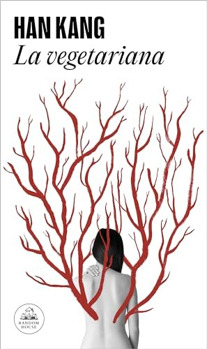
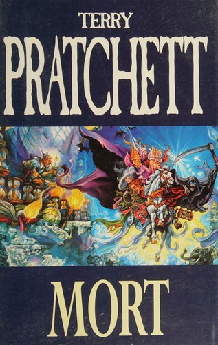
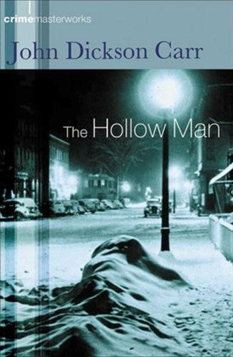
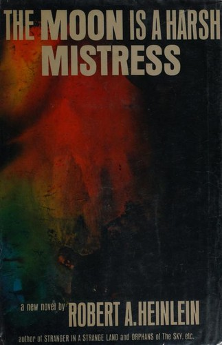

weekly digest
Week 2026-28
Recommendations for the week of 6 July 2026.
This week rotates the highbrow picks onto three edges left cold recently: translated non-Western literary fiction in a country the shelves have never touched (Korea), rigorous narrative nonfiction in anthropology rather than the usual history or economics, and the translated New Wave SF the persona names by author. The comfort picks stay in the most well-loved territory — Discworld, Golden-Age crime and classic SF — but each is a non-owned book whose pleasure is a clean idea or a clever structure rather than sentiment: Death's apprentice buckling causality, a locked-room puzzle that stops to explain its own mechanism, and a computer-managed lunar revolution.
Highbrow


Lowbrow


